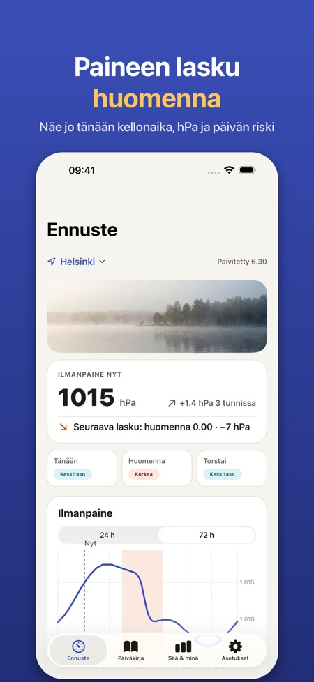
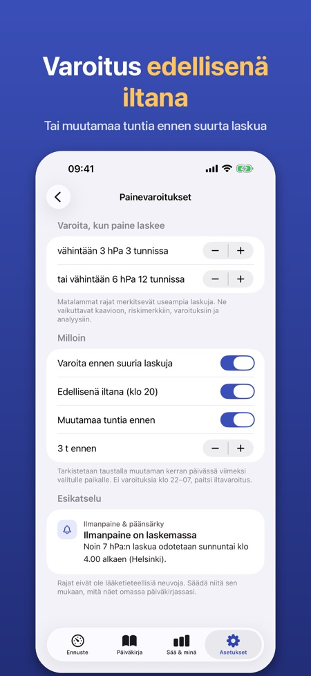
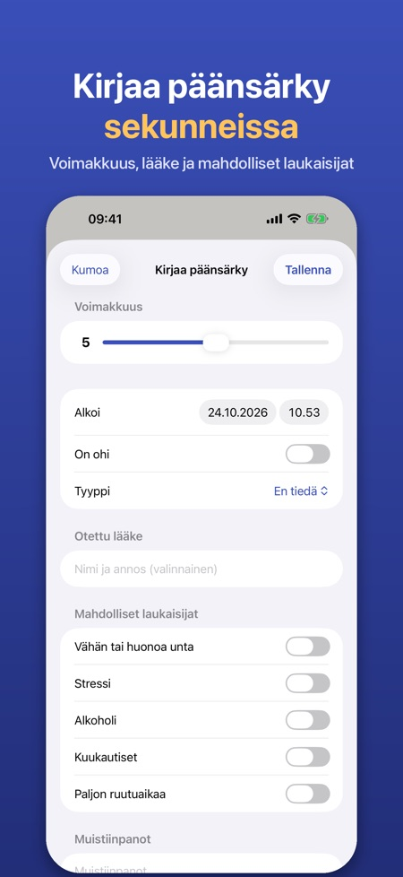

Paine-ennuste ja päiväkirja. Syysmyrskyt tuovat nopeita paineen laskuja. Näe ne tunti tunnilta, saa varoitus edellisenä iltana ja kirjaa päänsärky yhdellä napautuksella.



Moni kertoo päänsärystä tai migreenistä, kun ilmanpaine laskee nopeasti. Sovellus näyttää ilmanpaineen tunti tunnilta, merkitsee suuret laskut ja auttaa sinua näkemään, liittyykö sää päänsärkyysi.
ILMANPAINE TUNTI TUNNILTA
• Kaavio ilmanpaineesta seuraavan 24 tunnin ajalta (72 tuntia Prolla) sijainnillesi tai valitsemallesi kaupungille
• Laskuvyöhykkeet merkitään: vähintään 3 hPa 3 tunnissa tai 6 hPa 12 tunnissa – rajoja voi säätää
• Yksinkertainen päiväkohtainen riskimerkki (matala, keskitaso, korkea), joka perustuu vain paineen muutokseen ja selitetään sovelluksessa
• Myös ilmankosteus ja lämpötilan muutos
VAROITUS ETUKÄTEEN (PRO)
• Ilmoitus edellisenä iltana tai muutamaa tuntia ennen suurta paineen laskua
• Sovellus tarkistaa ennusteen taustalla viimeksi valitulle paikalle
PÄÄNSÄRKYPÄIVÄKIRJA
• Kirjaa yhdellä napautuksella, myös suoraan varoituksesta: voimakkuus 0–10, alku ja loppu, tyyppi, lääke ja auttoiko se, muistiinpanot
• Mahdolliset laukaisijat: uni, stressi, alkoholi, kuukautiset, ruutuaika
• Kuukausikalenteri paineen laskun päivineen, merkintäkohtaiset tiedot paineesta alun ympärillä ja yhteenveto kirjaamistasi laukaisijoista
VAIKUTTAAKO SÄÄ MINUUN? (PRO)
• 30 päivän päiväkirjan jälkeen päänsärkypäiviäsi verrataan saman päivän paineen laskuun: yksinkertaisia laskelmia ja kaavioita, ei lääketieteellistä johtopäätöstä
• Lääkäriraportti: PDF viimeisiltä 30 tai 90 päivältä tai omalta jaksolta
WIDGET (PRO)
• Ilmanpaine nyt, suunta ja seuraava suuri lasku Koti-valikossa tai lukitusnäytöllä
PRO
Vuositilaus tai kertaosto pysyvästi. Ilman Prota sinulla on edelleen 24 tunnin kaavio ja päiväkirja. Ei tiliä, ei mainoksia.
TIETOSUOJA
Päiväkirjasi pysyy iPhonessasi. Vain nimetöntä käyttötilastoa, jonka voit kytkeä pois. Säätiedot tulevat Apple Säästä.
Sovellus ei ole lääkinnällinen laite eikä anna lääketieteellisiä neuvoja tai diagnooseja. Jos päänsärkysi muuttuu tai on voimakasta, ota yhteyttä lääkäriin.